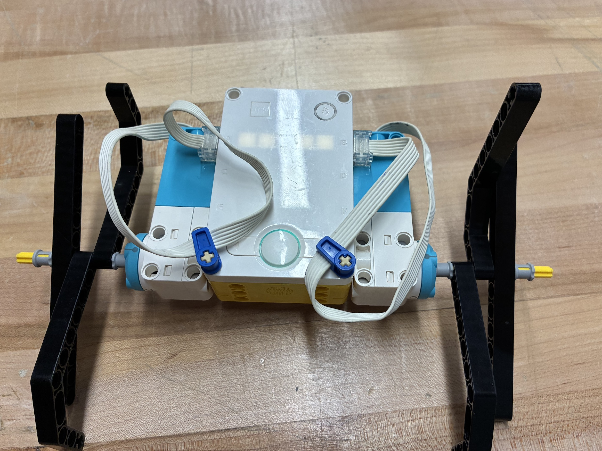

I built a silly walker robot that can move across a distance without the use of any wheels. To achieve this, I attatched rotors to the edges of the robot to serve as the mechanism to propel it. However, I ran into a problem where the radius of the square body was greater than its flippers, so it would stand upright as the rotors would not make contact with the ground at all, making the robot unable to move. To fix this, I attatched pegs to both ends of the body, to ensure that it can no longer balance upright. In addition, I believe that I had too little time to do this project. If given more time, I would've attatched more mass to the rotors to increase the force it moves the robot.